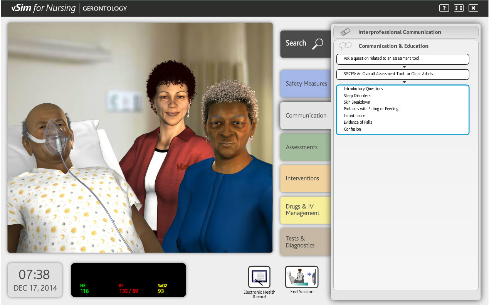

Title: The patient's Under Technology: In todays world, The Teachnology became a big part of healthcare. From manual to automatics and more on personalized care to patients...
REYNALEEN EVE LUCERO. 5 day ago. 2min read
When Nurses Click, Patients Heal
Title: When Nurses Click, Patients Heal: Healthcare Workers now is more on clicking, not just Stethoscopes and tools. Discover how using digitals in clinical systems help nurses to provide safe, fast, and high quality of care to the patients...

REYNALEEN EVE LUCERO. 2 day ago. 5min read
Smart Tools, Better Care
Title: Nurses are using smart tools to care patients this shows how technology helps nurses make better decisopns, avoid mistakesand can support patients efectively...
REYNALEEN EVE LUCERO. 6 day ago. 9min read
Teachnology With Heart
Title: Teachnology With Heart, some patients worry technology to use for them because it replace human touch...